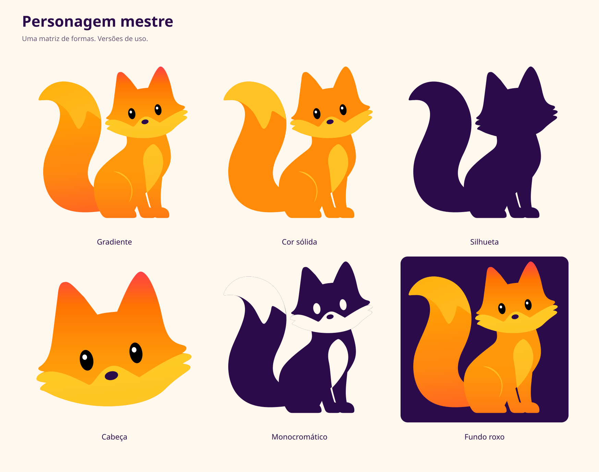
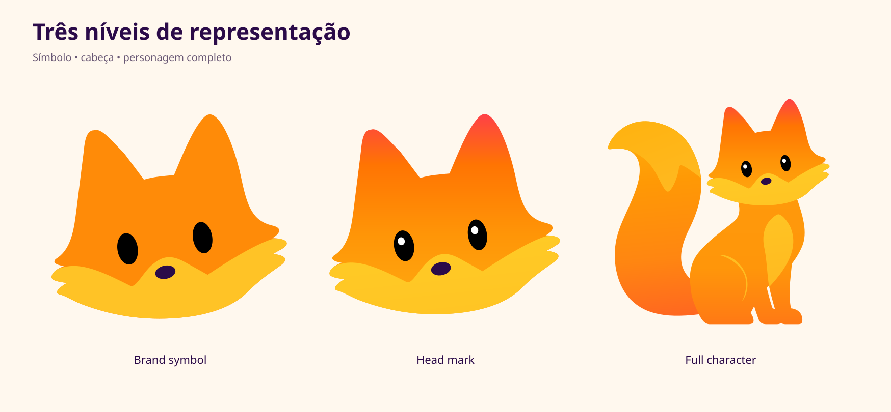
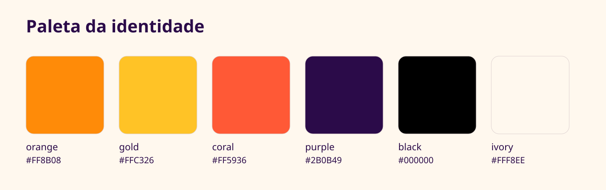
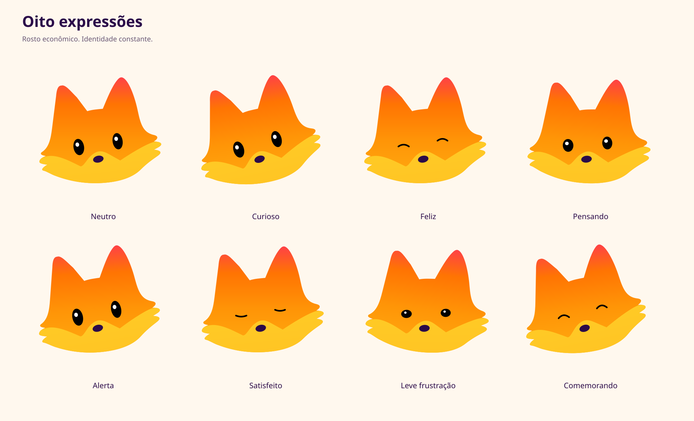

05 · Character sheet — construção

03 · Personagem mestre

04 · Níveis de representação

05 · Character sheet — construção
05 · Paleta

06 · Expressões

07 · Correção do corpo
Estudos em PNG a partir das referências. O personagem mestre permanece preservado.

Base do corpo em pé

Caminhando

Farejando o chão
As poses e vistas da edição rejeitada foram retiradas. Estes estudos ainda não substituem a matriz SVG e não foram aprovados como identidade final.
Uso e validação
Use o arquivo mestre em SVG para ampliar. Os PNGs têm transparência e servem para inserção direta em documentos, páginas e apresentações.
Ícones acima em tamanho nativo de CSS. O pacote contém as exportações reais em pixels e favicon ICO.

O rosto principal permanece nas oito expressões. Os três novos estudos corporais são PNGs com fundo claro. Os arquivos SVG da matriz continuam editáveis e não contêm imagens embutidas.
A matriz vetorial mantém a identidade visual, com pequenas diferenças em relação ao PNG aprovado. As vistas e poses rejeitadas foram retiradas. A revisão visual do corpo precede a próxima etapa de vetorização.